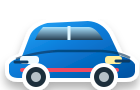

Pequenas conquistas
movem grandes caminhos!
Missões terapêuticas com movimento, psicopedagogia, ludicidade e adaptação individual — no tempo de cada criança.

Escolha uma atividade
Brincar, aprender, movimentar e conquistar.
Escolha sua vibe ⚡
Atividades com visual mais maduro, cores vibrantes e o mesmo propósito terapêutico.
Cards da Tia Tati
Orientação, incentivo e acolhimento em cada etapa.
Caminho Seguro
Dirija com atenção até o destino. Brincar também é terapêutico.
 Você consegue! 💗
Você consegue! 💗
O carrinho azul
está pronto!
Escolha o destino, a rota e como dirigir. No caminho, observe placas, pedestres e curvas.

Enquanto brinca, a criança também aprende.
O percurso trabalha coordenação olho-mão, planejamento motor, atenção sustentada e noções iniciais de trânsito seguro.
Abelhinha e a Flor
Ajude a abelhinha a encontrar a flor. Olhar, direção e precisão.
Vamos juntos! 🌼Encontre a flor
no seu ritmo!
Escolha o caminho, a flor e como conduzir a abelhinha.
Movimento com intenção.
O percurso trabalha rastreamento visual, coordenação olho-mão, precisão e controle de direção sem punição por erro.
Alcance ao Alvo
Toque nos alvos com calma. Alcance, lateralidade e coordenação.
Um alvo de cada vez! 🎯Alcance, toque
e comemore!
Escolha onde os alvos aparecem, quantos serão e o visual que você prefere.
Alcance funcional com adaptação.
O tamanho geral dos alvos continua ajustável no Modo Fisio e pode ser combinado com cada região.
Duas Mãos
Use os dois lados do corpo. Simultaneidade, alternância e integração.
Uma mão de cada lado! 🤲Duas mãos,
um só ritmo!
Escolha como tocar, quantas rodadas fazer e o ritmo do desafio.
Integração bilateral de forma lúdica.
A missão pode ser usada para simultaneidade, alternância e alcance cruzado, respeitando o tempo da criança.
Reflexo Neon
Escolha o tipo de estímulo e entre no ritmo. Reação, memória e coordenação.
 Foco no próximo sinal! ⚡
Foco no próximo sinal! ⚡Entre no ritmo.
Reaja no seu tempo.
Escolha uma experiência curta e progressiva. O desafio adapta intensidade sem transformar erro em punição.
Visual jovem, propósito terapêutico.
Sem ranking entre pacientes. O foco é superar a própria sequência, manter atenção e ampliar o controle do movimento.
Atividade
Montar meu circuito
Escolha as missões. O circuito combina tarefa, pausa, feedback e progressão sem transformar erro em punição.
Modo Fisio
Intervenções da Dra. Tatiana

O app usa foco externo na tarefa, tempo para processamento e reforço sem excesso de fala.
Estúdio de Voz
Grave cada frase diretamente no celular. A gravação fica neste aparelho e terá prioridade durante as atividades. Sem voz sintética estranha.
Relatórios das sessões
 MISSÃO CONCLUÍDA
MISSÃO CONCLUÍDA
Que esforço lindo!
Pequenas conquistas constroem grandes histórias.